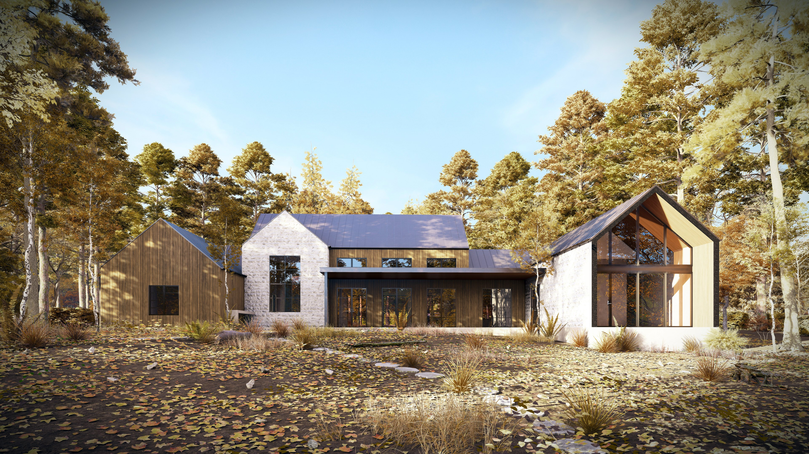
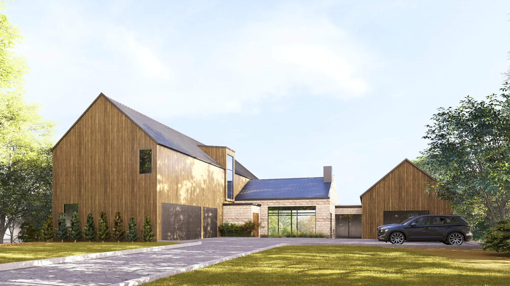

ARCHITECTURAL PORTFOLIO
Creating spaces with purpose,
shaped by design.
An exploration of architectural design, technical documentation, and 3D visualization, where functionality, aesthetics, and attention to detail come together.
SELECTED WORK
Projects.
Residential.

01Cedar Creek Ranch
Residential · Texas, USA

026210 Brightwater Way
Residential · Texas, USA
.jpg) 03
036220 Brightwater Way
Residential · Texas, USA
Commercial.
ABOUT ME
Shadrock De Leon
Architectural Designer
I’m a young architectural designer driven by a passion for thoughtful design and a commitment to continuous growth. Through involvement in residential, commercial, and interior projects across different contexts, I continue to explore diverse architectural approaches, broaden my perspective, and refine my design skills.
I believe that every project is an opportunity to learn, adapt, and pursue better solutions. My goal is to create meaningful spaces through a balance of creativity, technical understanding, and attention to detail.
EXPERTISE
Capabilities.
Architectural Design
Development of architectural concepts, space planning, and functional design solutions for residential and commercial projects.
Drafting & Documentation
Preparation of detailed architectural drawings, construction documents, and technical plans with accuracy and clarity.
3D Modeling & Visualization
Creation of 3D models, photorealistic renders, and visual presentations to communicate design intent.
Material Takeoffs & Coordination
Material research, quantity takeoffs, fixture selection, and supplier coordination to support project planning and execution.
GET IN TOUCH